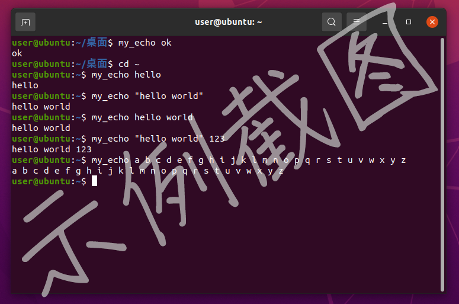
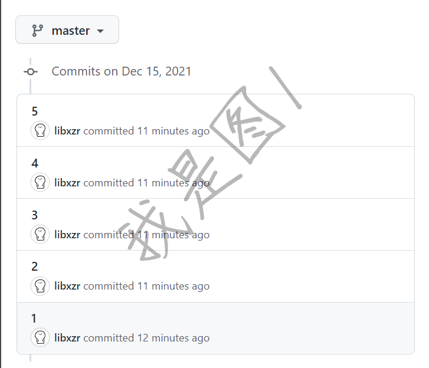
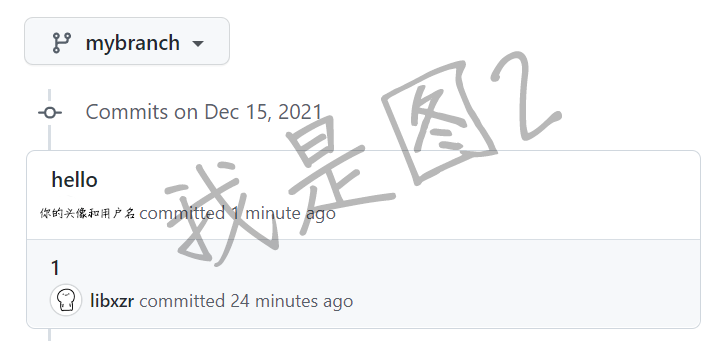

Hello My Binary
# Hello My Binary 软件部开发方向第三期任务 ## 上期参考答案 #### `解释 命令返回值 与 输出流 的区别` 返回值是命令执行状态的直接代表，以 C 语言为例，其由 main 函数最后 return 的值决定，一般 0 代表执行成功，非 0 代表执行失败。返回值默认不会打印出来，但是可以直接用于组织简单的逻辑关系，比如`&&`和`||`，你也可以使用`echo $?`来查看上条命令的返回值。 输出流则是程序在终端中打印的内容，以 C 语言为例，其 printf 函数默认会将信息打印到 stdout，而你也可以使用类似`fprintf(stderr,"错误");`的操作将错误信息打印到错误流。 ### 命令解释 #### `./a` 当前目录下的 a 文件夹，或**执行当前目录下的 a 文件**。 #### `ls ../a/b` 打印上级目录下的 a 文件夹下的 b 文件夹的内容。 #### `cd ~` 进入 home 目录。 #### `chmod 777 /tmp/a.py` 将**根目录**下的 tmp 文件夹中的 a.py 文件的权限更改为 “所有用户可读可写可执行” 。 #### `sudo rm -rf /` **以最高权限删除系统的所有文件。** #### `cat ~/*/info.txt` 打印用户 home 目录下的 所有下一级文件夹 中的 info.txt 文件的内容。 #### `cat 1.txt | grep good` 打印当前目录下的 1.txt 文件中所有包含 good 的行。 ####
mkdir `find . -type d | tail -n 1`2
创建一个名称为 “当前目录下最后一个文件夹 加上一个2” 的文件夹 比如当前目录下最后一个文件夹是 a ，那么此命令会创建一个名称为 a2 的文件夹，再次运行会创建一个 a22 文件夹。 #### `cat 1.txt 2>/dev/null || touch 2` 尝试打印 1.txt 的内容，如果失败（比如文件不存在或者权限不足），那么不显示错误信息，但是创建一个名称为 2 的文件。 ### 清空回收站脚本 其实`rm`命令本身就带有`-v`参数，可以直接打印信息。 当然你要用`for`循环遍历或者`find`命令遍历也不是不行。 ``` #!/usr/bin/bash echo "即将清空回收站..." rm -rfv ~/.local/share/Trash echo "回收站已被清空" ``` ### oom score 脚本 #### 方案一 使用管道与正则匹配以遍历所有以数字命名的目录。 ``` #!/usr/bin/bash for i in `ls /proc | grep ^[0-9]*$` do echo "`cat /proc/${i}/comm`(${i}):`cat /proc/${i}/oom_score`" done ``` #### 方案二 使用if语句进行匹配，只在遍历到的目录为数字时打印信息。 ``` #!/usr/bin/bash cd /proc for i in * do if [[ $i =~ ^[0-9]+$ ]] then echo "`cat ${i}/comm`(${i}):`cat ${i}/oom_score`" fi done ``` #### 方案三 投机取巧。 ``` #!/usr/bin/bash # 投机取巧，既然能屏蔽错误，那干脆直接遍历所有目录与文件 # 出错的隐藏掉，剩下的自然就是想要的 cd /proc for i in * do echo "`cat ${i}/comm`(${i}):`cat ${i}/oom_score`" done 2>/dev/null ``` ## 任务一：最小程序 使用 GCC 编译一个代码量最少的 C 语言程序 ### 任务点 - 安装 gcc 编译器。 - 尝试用 gcc 编译一个 hello world 并运行一下？ - 使用 gcc 编译器 编译一个代码量最少（字最少）的 C 语言程序，要求能通过编译即可。 ### 需要上交的东西 - 代码量最少 C 语言程序的源码（.c文件）。 ### 一些想说的 也许，你们在学习 C 语言时，从一开始就在使用各种集成开发环境（ IDE ）。IDE 中总是充满着各种看不懂的选项，安装和配置需要花费不少时间，也会劝退不少人。但是实际上，以 C 语言为例，编译一个简单的单文件程序仅仅只是一行命令的事情。IDE 所做的，是给以你语法提示，外加帮你输这些编译命令（比如 dev c++ 的后端貌似就是 mingw 的 gcc ）。作为初学者， IDE 的强大有时反而会是一种阻碍，一方面是其本身的使用需要学习，具有一定的门槛；另一方面，IDE 使你无法接触软件的真正编译过程，而 IDE 报错时给出的错误往往是后端的命令行中的编译器给出的，这就造成了信息的断层：一边要处理后端编译器给出的信息，而却连后端编译器都没碰过，这就如同盲人摸象、闭眼开车。因此，如果你连命令行下的编译器都没摸过，又怎么能说自己已经完全理解掌握了一门编程语言呢？ ### 指路 - gcc 系统默认应该已经自带了，如果没有的话请自行[搜索安装方式](https://lmstfy.net/?q=dWJ1bnR15a6J6KOFZ2Nj)。 - [如何使用 gcc 编译 C 语言文件？](https://lmstfy.net/?q=Z2Nj57yW6K+RY+aWh+S7tg==) - 对于“代码量最少的 C 语言程序”，请回忆 C 语言课上学到的知识，一个 C 程序至少需要什么。 （提示：程序只需要能通过编译即可，不需要有任何功能，编译时有多少警告都无所谓） ## 任务二：My Echo 实现一个自己的 echo 命令 ### 任务点 - 了解 Linux 中 PATH 的概念，可以类比到 Windows 下的环境变量。 - 了解 C 语言的完整 main 函数形式：`int main(int argc, char *argv[])`，以及其各个参数的作用。 - 实现一个自己的 echo 命令。 要求：  1. 无论当前处于哪个目录下，都不用输入可执行文件的所在路径，直接输入命令（`my_echo`）就能用，如同系统命令一般。 2. 如图中的几种加引号方式，或者不加引号，都要能够正常输出，就像原版 echo 命令一样。 ### 需要上交的内容 - 截图证明你真的可以在任意目录下直接运行 `my_echo` 命令。 - 你的源代码（.c）文件。 ## 任务三：初识本地 git 仓库 经过了上两期任务中的提交作业过程，相信你已经对 Github 的基本使用方法有了一些了解。前几次任务中，都是在网页上操作 Git 仓库上传文件，现在，有了 Linux 环境，安装 Git 版本控制系统只是一行命令的事情（哪像 Windows 那么麻烦），于是可以开始学学怎么操作本地仓库 与 如何将本地仓库与 Github 进行联动了。 ### 任务点 - 安装 Git 软件包。 - 学习诸如`git add`、`git commit`、`git revert`、`git push`、`git checkout`、`git fetch`、`git pull`、`git reset`的使用。 - Fork [这个仓库](https://github.com/hdu-asta/GitExperiment)。 - 把刚刚 Fork 得到的仓库克隆到本地。 - 对刚刚克隆的仓库在本地进行一番操作，然后 push 回 Github ，实现： **创建一个新分支，删除提交 2 到 5 ，然后创建一个新的提交。** 示例： 图1 转换为 图2 ( Github 网页 commits 页面)   提交的修改内容无所谓，我只看日志（ commits 页面）。 ### 需要上交的内容 - 一张类似图2的 Github 网页截图，证明你已经完成了任务。 当然你的仓库也暂时别删，我也会寻着去看看。 ### 指路 - [怎么安装 Git ？](https://lmstfy.net/?q=dWJ1bnR1IOWuieijhSBnaXQ=) - [怎么克隆仓库到本地？](https://lmstfy.net/?q=5oCO5LmIIGNsb25lIGdpdCDku5PlupM=) - [Git 怎么用？](https://lmstfy.net/?q=Z2l0IOWRveS7pOivpuinow==) - Push 回 Github 的时候可能会遇到要求使用 Token 代替密码的问题，[帮你搜索一下](https://lmstfy.net/?q=Z2l0aHViIGFjY2VzcyB0b2tlbiDkvb/nlKg=)。 ## 任务的上交方式 和上期任务一样，通过向[这个仓库](https://github.com/hdu-asta/AssignmentsSubmitting)发起 Pull request 的方式进行。唯一的区别是：这次请把你的学号文件夹放在`assignment3`文件夹中。 参考目录结构如下（文件名无所谓） ``` . └── assignment3 ├── 22066132 │ ├── github仓库.png │ ├── my_echo.c │ ├── my_echo.png │ └── 最小c程序.c └── placeholder ``` ~~**注意：由于这里牵扯到了仓库之间的同步问题，因此你上次 fork 的仓库很有可能不再能够用于发起 Pull request 了（它里面甚至没有`assignment3`文件夹）。因此，你需要重新 fork 交作业的仓库。**~~ ~~（你可以在 Settings -> Delete this repository 删除上次 fork 的仓库）~~ 你可以继续按着上面被划掉的操作干，也不妨可以试一下 不 Fork 新的交作业仓库 ，而是使用本地 Git 命令的组合把自己上次 Fork 的交作业仓库同步到科协仓库的最新状态，然后在其上再把自己的新作业加进去。